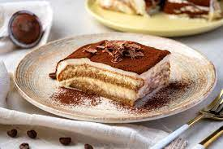

Kolay Tiramisu Tarifi İçin Malzemeler
- 1 adet hazır pandispanya keki
Muhallebisi için;
- 2.5 su bardağı süt
- 3 yemek kaşığı toz şeker (tepeleme dolu)
- 3 yemek kaşığı un (tepeleme dolu)
- 1 adet yumurta
- 200 gram labne peyniri (1 paket)
Islatmak için;
- 1/2 (yarım) su bardağı sıcak su
- 3’ü bir arada hazır kahve
Üzeri için;
Kolay Tiramisu Tarifi Nasıl Yapılır?
- Öncelikle muhallebi için şeker, un, süt ve yumurta çırpılır. Ocakta kaynayıncaya kadar karıştırılarak pişirilir.
- Kaynadıktan sonra altı kapatılır ve daha hızlı soğuması için ayrı bir kaba boşaltılır.
- 15 dk kadar bekleyip ılındıktan sonra labne peyniri ilave edilip mikser ile pürüzsüz hale gelene kadar çırpılır.
- Diğer taraftan sıcak su içinde hazır kahve çözdürülerek hazırlanır ve hafif soğuması beklenir.
- Servis tabağına pandispanya kekinin bir katı yerleştirilerek kahvenin yarısı ile ıslatılır.
- Üzerine kremanın yarısı ilave edilip güzelce yayılır.
- Kalan kahve ile üst kat da ıslatıldıktan sonra pandispanyanın ikinci katı kremanın üzerine kapatılır.
- Kalan krema pastanın üzerine dökülerek pastanın üzeri ve kenarları güzelce spatula veya pasta sıvama aparatı ile kapatılır.
- Son olarak pastanın üzerine süzgeç yardımı ile kakao serpilir.
- Buzdolabında birkaç saat mümkünse 1 gece dinlendirildikten sonra dilimlenerek servis edilir.